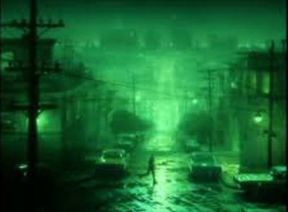

The Green Fog

Guy Maddin, Evan Johnson & Galen Johnson
|
62 min – 16mm auf HD – English B: Hu Bo – K: Fan Chao – S: Hu Bo – T: Bai Ruizhou – P: Liu Xuan – V: B: Guy Maddin, Evan Johnson, Galen Johnson – S: Evan Johnson, Galen Johnson – M: Jacob Garchik – P: Evan Johnson, Guy Maddin – V: The Festival Agency
|
monday 15 oct 8.30 pm werkstattkino
The prologue shows a dial being turned from “Talk” to “Listen”. In a studio cinema, a man in handcuffs is held at gunpoint as he watches the images on the screen. A map can be seen, with a finger pointing to San Francisco. Reporters stand in front of a building, poised to deliver news by loudspeaker; the public wait in fear. The Golden Gate Bridge appears, bathed in green light; a storm rises, the steep streets of the city are entirely deserted.
The structure of this film pays homage to Hitchcock’s VERTIGO: a dizzying assemblage of film and TV images both familiar and unknown, all from the Bay Area. From this trove of found material, they have created a cinematic fantasy that pulls the viewer in and never lets go. (Arsenal Institut)
Guy Maddin Born in Winnipeg, Canada, in 1956. He studied Economics at the University of Winnipeg. He is an autodidact and shot his first short film, The Dead Father, in 1985. Maddin is an installation and Internet artist, a lecturer at Harvard University, a writer and filmmaker. He has also mounted numerous live performance versions of his films around the world, featuring live music, sound effects, singing and narration. In 2016 he and co-director Evan Johnson launched their major Internet interactive work, Seances.
|
| Evan Johnson has been working with Guy Maddin since 2009. Johnson lives in Winnipeg, Canada.
|
Galen Johnson Born in Winnipeg, Canada in 1981. He earned a degree in Architecture at the University of Manitoba and worked for several years in the architecture industry before working as production designer and composer on the film The Forbidden Room by Guy Maddin and Evan Johnson. He lives in Winnipeg, where he works as a composer and designer. |
Films (Guy Maddin) The Saddest Music in the World 2003 – Brand Upon the Brain! 2006 – My Winnipeg 2007 (3. UX) – Keyhole 2011 – Mundo Invisível 2012 – The Forbidden Room 2015 (10. UX) – The Green Fog 2017 |